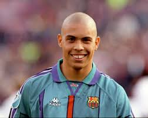

Ronaldo nasceu dia 18 de setembro de 1978 no Rio de Janeiro e cresceu nos subúrbio,
desde novo
Ronaldo
demonstrava um talento natural para o futebol e sempre gostou do esporte, aos noves anos de idade fez uma
peneira para um time de futsal,
para ter uma chance maior fez o teste como goleiro, e passou depois de uma
semana ele pediu para jogar na linha
Apos isso, Ronaldo entrou paras categorias de base do São Cristovão, time que foi revelado,
por la
marcou 44 gols
em 73 jogos,aos 17 anos foi convocado para seleção Brasileira sub-17 para disputar o sul-americano sendo
artilheiro
Apos isso, Ronaldo alavancou muito sua carreira, tendo como principais
titulos 2 copas do mundo,
sendo considerado o melhor centro-avante da histora do futebol